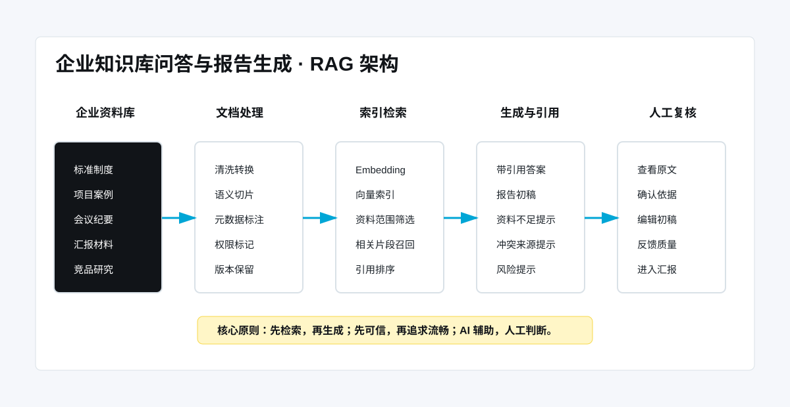
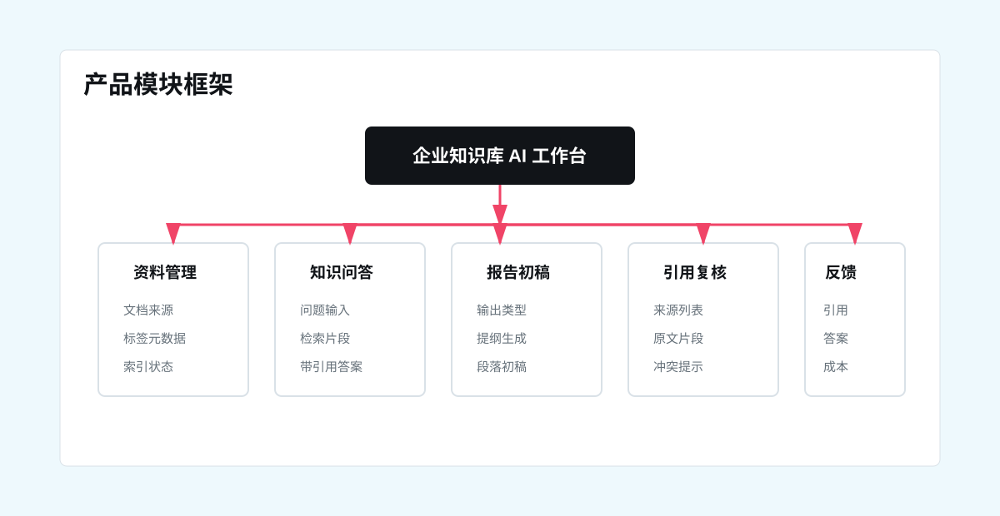
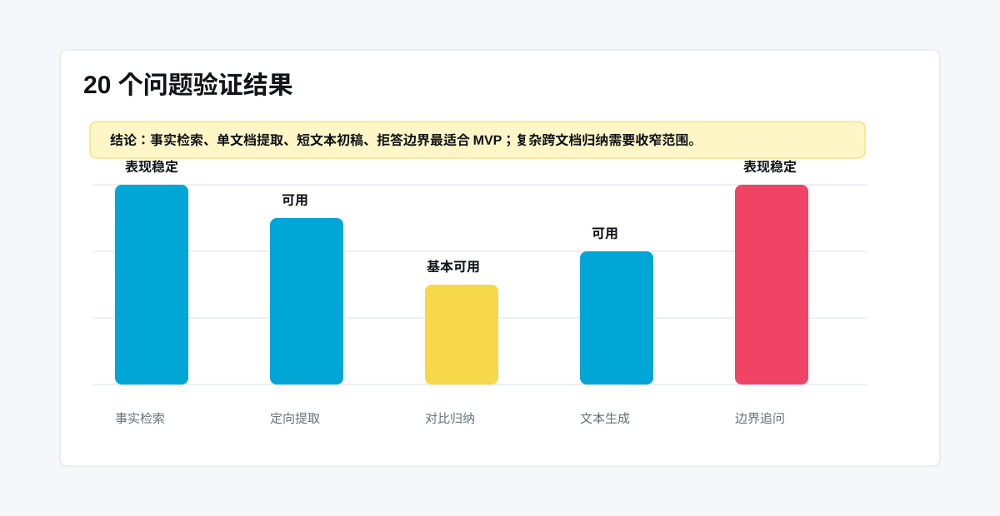

标准、案例、纪要、汇报和竞品资料分散在不同文件和版本中。
Project Case · Enterprise RAG
企业知识库问答与报告生成
面向企业标准制度、历史案例、会议纪要和汇报材料分散的问题，设计一套先检索、再生成、附引用、可复核的 RAG 知识问答与报告初稿工作流。

Problem
企业知识不是缺资料，而是难检索、难复用、难相信
这个项目解决的是组织知识复用问题：让业务人员能从分散资料中找到依据，生成可修改初稿，并明确知道哪些内容需要人工复核。
很多知识靠资深员工记忆，新人和跨团队成员复用成本高。
直接问大模型缺少内部资料上下文，答案无法进入正式业务判断。
汇报说明、定位摘要和评审口径需要反复查找、摘录、拼接。
Architecture
核心链路：先检索，再生成，再复核
产品不追求开放聊天，而是把 AI 输出约束在可追溯资料范围内。
Modules
五个产品模块

Demo
从业务问题到带引用答案
用户看到的不只是答案，还包括召回片段、来源文档、引用编号和复核提示。
资料来源集团商办产品建筑设计标准
公共空间、配置口径、评审原则。
资料来源区域综合住区产品管理办法
产品定位、变更审批、会前预审。
资料来源产品评审会议纪要
评审意见、待办事项、决策结论。
用户问题
集团商办标准里，对公共空间的核心要求有哪些？
召回片段
公共空间设计应结合项目定位、客群特征和运营场景，优先保证入口识别、交通组织、公共界面和后期维护的稳定性。
生成答案
公共空间需要同时满足形象展示、客流组织、运营效率和后期维护要求。重点关注入口识别性、动线清晰度、公共界面连续性、消防疏散条件和材料耐久性。
- 集团商办产品建筑设计标准：公共空间章节
- 历史项目案例库：商办公共空间复盘
Information Design
资料、字段与引用规则
| 设计对象 | 关键字段 | 产品目的 |
|---|---|---|
| 资料元数据 | 文档类型、项目名称、业务主题、版本、权限范围 | 让检索结果可筛选、可解释、可追溯 |
| 问答输入 | 用户问题、问题类型、资料范围、时间范围、输出要求 | 把开放问题收敛到可检索任务 |
| 答案输出 | 结论摘要、分点说明、引用来源、风险提示 | 让业务用户能判断答案是否可用 |
| 报告初稿 | 输出类型、目标对象、提纲、段落、引用依据 | 减少重复整理，但保留人工编辑 |
Validation
20 个问题验证 RAG 边界
验证不只看模型会不会回答，而是看检索、引用、答案、修改成本和边界提示是否适合真实工作。

Evaluation Table
关键问题类型表现
| 问题类型 | 表现 | 原因 | 产品策略 |
|---|---|---|---|
| 事实检索 | 表现稳定 | 标准条文和制度类资料边界清晰 | 作为高频入口 |
| 定向提取 | 可用 | 单文档和明确主题提取较稳定 | 支持资料范围筛选 |
| 对比归纳 | 基本可用 | 依赖召回完整度和资料标签质量 | 保留原文对照，避免直接定论 |
| 文本生成 | 可用 | 适合短文本初稿，不适合直接定稿 | 标注 AI 初稿和复核点 |
| 边界追问 | 表现稳定 | 拒答和资料不足提示比强答更安全 | 作为可信机制重点设计 |
Decisions
关键取舍
先展示来源片段，再生成答案，降低无依据回答进入业务判断的风险。
报告生成只提供可修改草稿，必须保留引用和人工确认点。
企业知识场景里，错误但流畅的答案比“不知道”更危险。
Roadmap
后续路线
v0
场景验证
建立问题集、资料样例和人工评估表。
v1
知识问答 MVP
支持资料检索、引用片段和带来源回答。
v2
报告初稿
支持背景说明、定位说明、竞品摘要等模板。
v3
权限与反馈
增加资料权限、反馈闭环和评估面板。
v4
企业流程嵌入
接入评审、汇报、审批等业务流程。